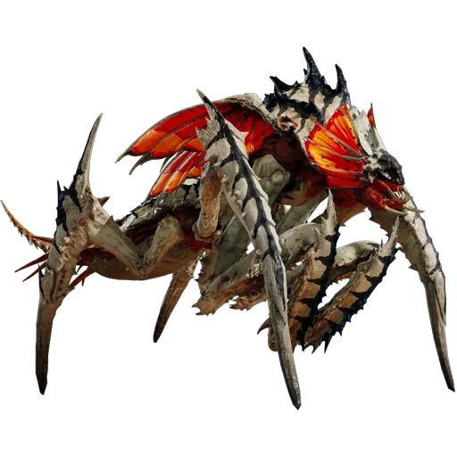
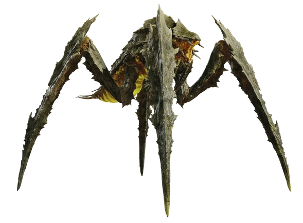
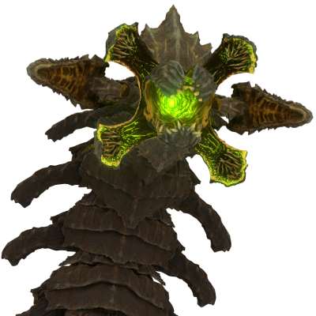
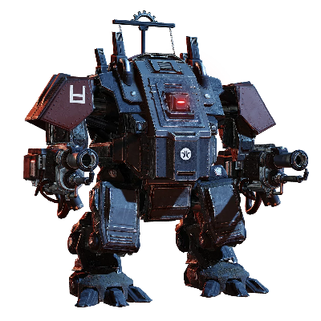
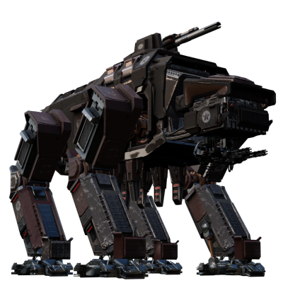
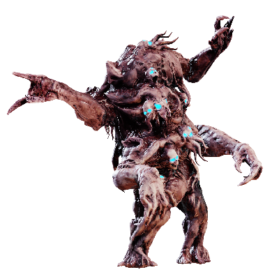
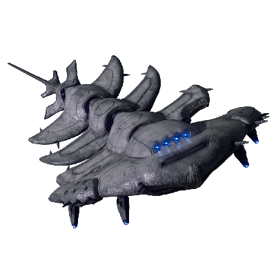

{{item.title}}

{{item.desc}}
Special Terminids
Stalker
Due to SuperEarth genetic tempering with the Hunters,they have mutated to gain the ability of camouflage themselves to hide themselves.
When threaten,they can leap away from danger and prepare for the next attack.
They have learn to ambush Helldivers with razorsharp claws,or use its tongue attack to knock down helldiver to make them even more vulnarble.

Bile Titans
Bile Titans are massive,heavily armoured terminids,which makes them impervious to light and medium pen firearms.
Despite their sheer size,they can move quite quickly to catch up to helldivers.
Their corrosive biles can melt through helldivers tough armour or crush them with their claws.

Hive Lords
Hive Lords are one of the biggest Terminids,they usually traverse in the ground that cause massive quakes.
Their armour is extremely durable make it resistance to most heavy weapons.
They will ermerged from the ground to crush helldivers or spit vollies of corrosive bile

{{item.title}}

{{item.desc}}
Special Automatons
Hulks
Hulks are heavily-armored siege walkers utilized by the Automatons that make them impervious to light and medium pen weapons.
They are equipped with different weaponry that makes them excel in close or long range combat.
Hulk bruisers that are armed with rapid fire cannons and rapid fire pulse cannons.
Hulk scorchers are close range combatant that are armed with flamethrower and a buzzsaw and will aggressively try to close the distance.

Factory Strider
Factory Striders are currently the biggest automatons on the battlefield, its shell is enhanced with heavy plating and reinforced joints which make it resistance to heavy weaponry.
They are equipped with a cannon on its back and its head is armed with 2 miniguns to attack Helldivers.
They can also fabricate devastators to assist it in battle.

{{item.title}}

{{item.desc}}
Special Illuminates
Fleshmobs
The Fleshmobs are heavy illuminates units that the illuminates experimented with SuperEarth Citizen that have failed and created the grotesque abominations.
They are slow while stumbling around the battlefield but they will charged towards Helldivers with surprising speed.
They are most dangerous when they are hordes of voteless supporting it.

Leviathans
Leviathans are massive illuminates airships.
They are armed with 8 laser cannons that have increadible destructive powers.
They are also equipped with advanced shielding technology, making them difficult to destroy.
